Research
Academic and lab research spanning reinforcement learning and motion planning.
Reinforcement Learning Benchmarking Jun 2026 – Sep 2026
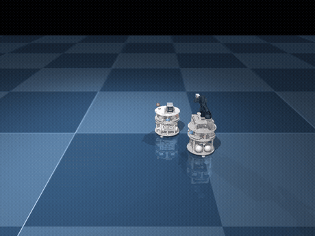
Objectives
As a Robert T. Herzog SURF Fellow at the Riviere Robot Lab (NYU Tandon), benchmark reinforcement-learning against sampling-based controllers on three space-manipulation tasks — debris collection, refuel insertion, and wire detangling — both in simulation and on real hardware.
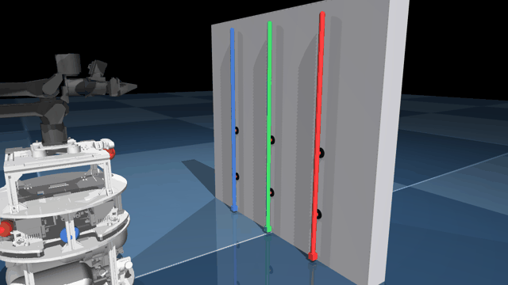
Methods
Built the tasks as Gymnasium environments in MuJoCo MJX (GPU-accelerated via JAX) and trained PPO with rsl_rl, benchmarking it against sampling-based MPC (MPPI, CEM, and Predictive Sampling) with online domain randomization for sim-to-real robustness.
Results
Deployed the trained policies and controllers on hardware and analyzed their performance against a novel RL algorithm, with results prepared for submission to ICRA.
Temporal Robotics Planning Jan 2025 – Mar 2025
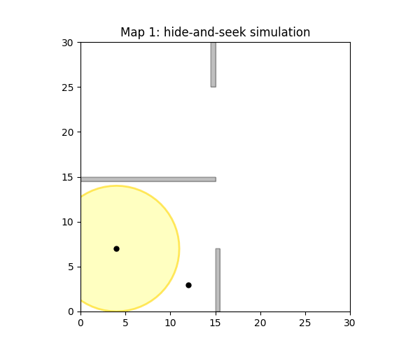
Objectives
Plan a path for a hider that must reach its goal while staying outside a moving seeker’s sensor range — a temporal, space-time planning problem where the valid path depends on when the hider is at each point.
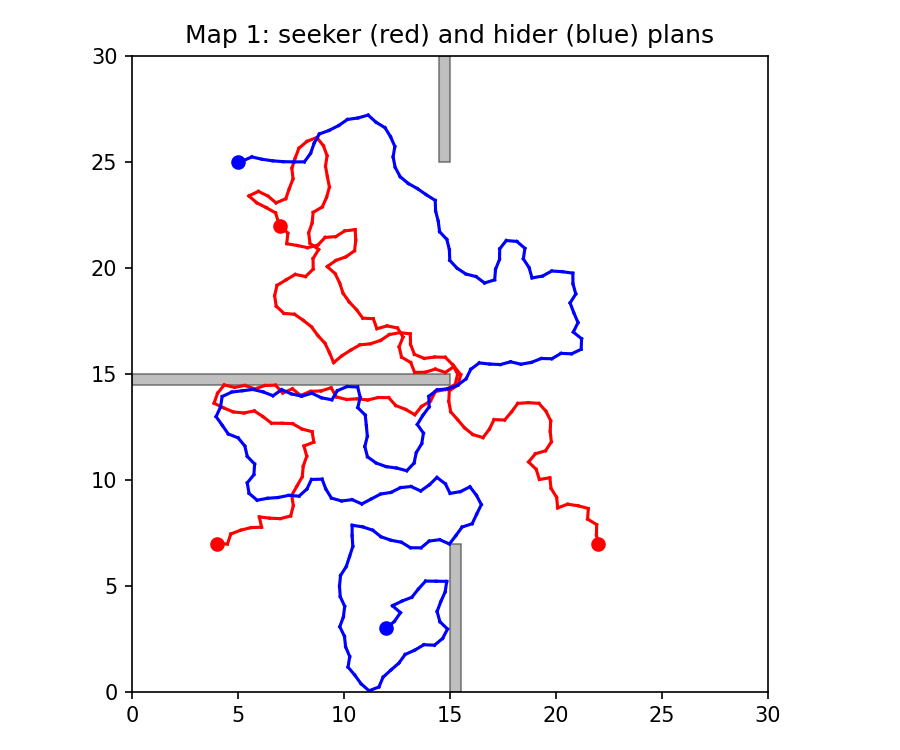
Methods
The seeker’s patrol is planned first; the hider is then planned in a space-time configuration space, adding a node only if it stays outside the seeker’s sensor footprint at that instant. The seeker’s range decays exponentially the longer it is away from its charging node and resets on return, so timing matters. Implemented RRT and EST and their temporal variants in Python.
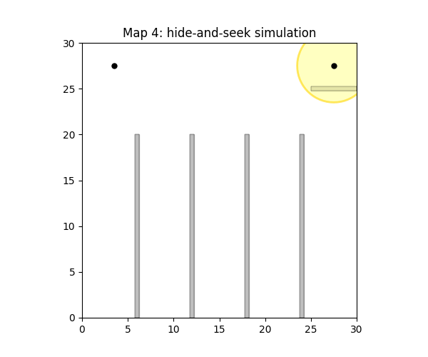
Results
Across five environments, the temporal planner threads the hider through the seeker’s blind spots; a comparative analysis found RRT yielded a 22% higher success rate for the hider by producing more direct escape paths.
Projects
Hands-on robotics and mechanical builds — full hardware lifecycles, autonomy, and computer vision.
Robot Multitasking via Jacobian Nullspace Sept 2025 – Dec 2025
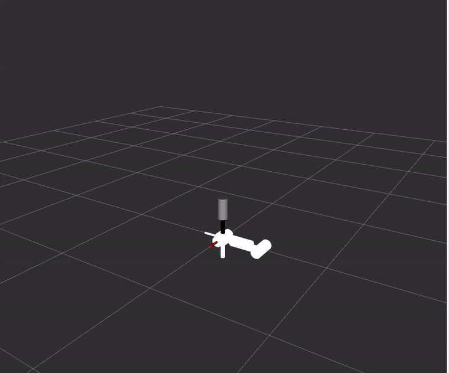
Objectives
Drive a redundant 7-DOF manipulator to track fast, free-flying targets in real time while spending its extra degree of freedom on a secondary task — a live demonstration of task-priority redundancy resolution.
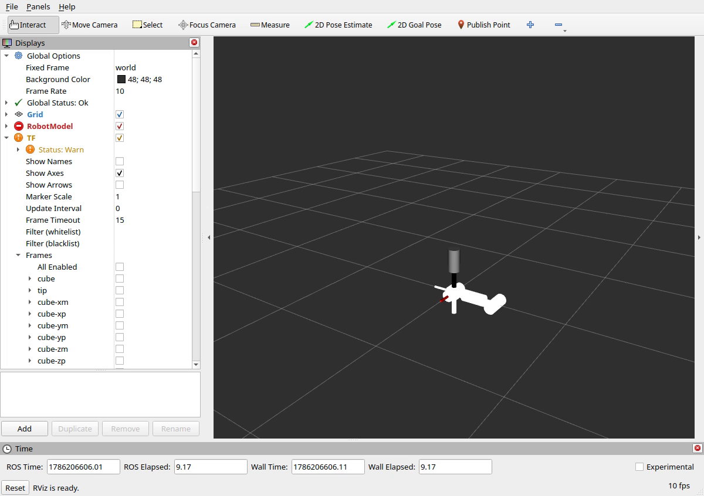
Methods
A damped least-squares resolved-rate controller running at 100 Hz: each tick builds the tip Jacobian, solves for the joint velocity toward the target, and projects a secondary wrist-pointing task into the Jacobian null space — q̇ = J⁺(ẋd + λe) + (I − J⁺J) Jw⁺(…). The damping adapts to the smallest singular value so the solution stays bounded near singularities. Built as a ROS2 (Jazzy) package.
Results
The arm smoothly chases bouncing balls published as RViz markers — tracking one ball with its tip while continuously pointing its wrist at another, staying stable even as it stretches toward singular configurations.
Capstone Design Robot Sept 2025 – Mar 2026

Objectives
Design and build a custom autonomous robot through a full hardware lifecycle (PDR, CDR, BOM) — robust enough to scale a 37° incline and to intake and expel game pieces within a tight 3-inch diameter without jamming.
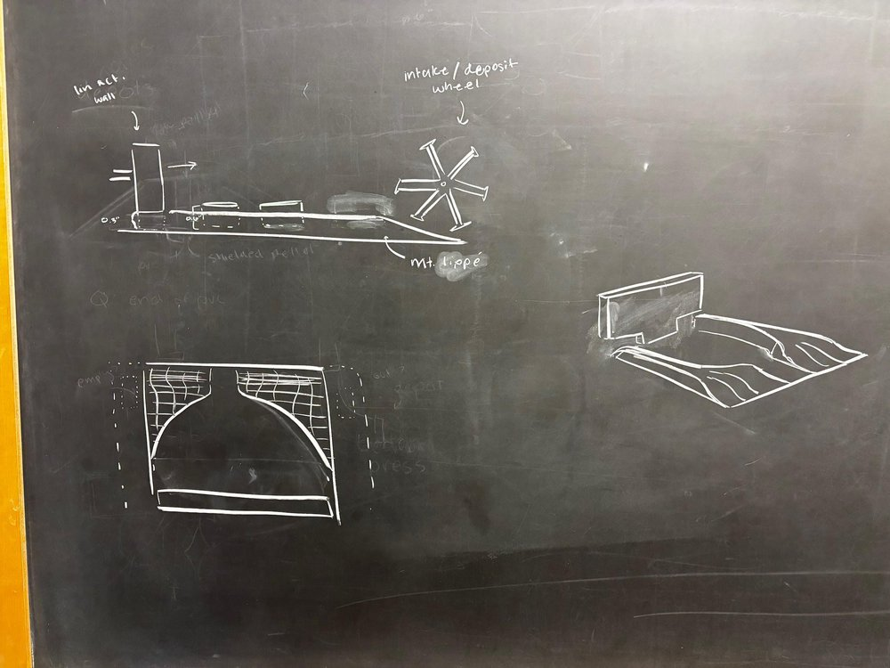
Methods
Managed timeline delivery with Gantt charts; wrote a C++ motor controller using PID control on an ESP-32 / RoboClaw stack for full autonomy; and designed a custom agitation-and-funneling system for reliable intake and expulsion within a 3-inch diameter.
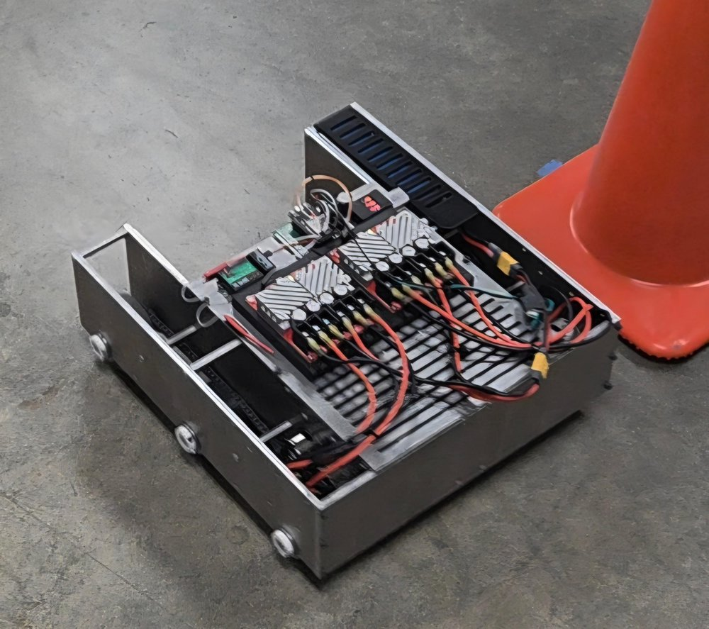
Results
Machined and assembled a highly robust 40 lb robot capable of scaling a 37° incline under full autonomous control.
SLAM Robot Apr 2025 – Jun 2025
Objectives
Build a complete navigation loop for vertex, a large four-wheel omnidirectional robot — localizing against a stored map, planning collision-free paths, and following them autonomously in the real world.
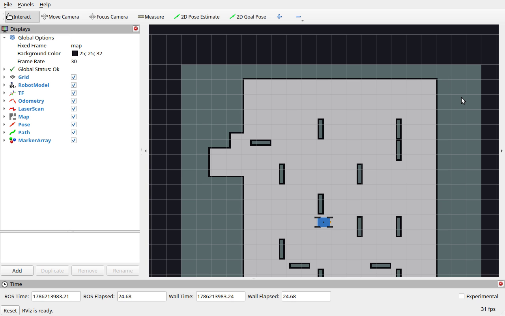
Methods
An RRT planner searches in (x, y, θ) with a 0.125 m step and 10% goal bias, validating each pose by stamping a rotated footprint mask over the occupancy grid; a scan-matching localizer corrects odometry against the map; and a waypoint follower converts the path into four-wheel velocity commands. Built as ROS2 (Jazzy) packages.
Results
Vertex plans and drives its way through a maze in real time, threading tight corridors while keeping its footprint clear of obstacles.
Intelligent Line Follower Apr 2024 – Jun 2024
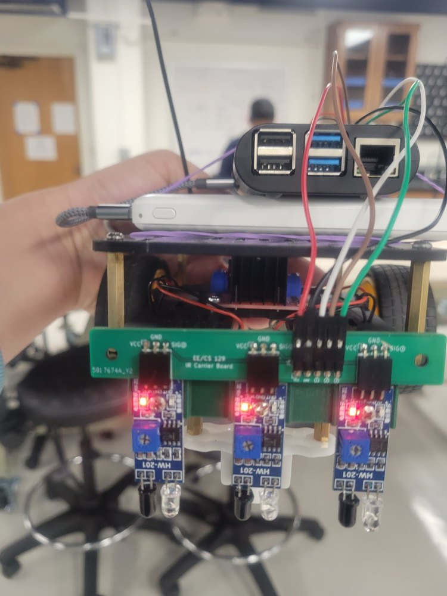
Objectives
Construct a line-following robot that responds to environmental feedback and lets the user change its goal on the fly.
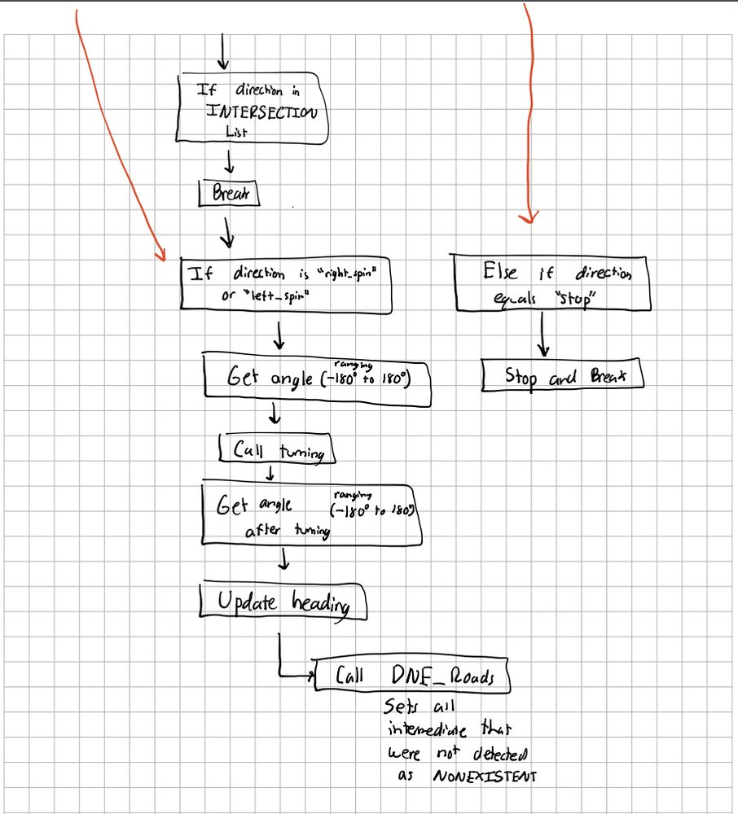
Methods
Driven by an A* algorithm and integrating IR and ultrasound sensors for environmental feedback, with a multithreaded architecture and a concise UI — designed from the state-machine and behavior flowcharts shown here.
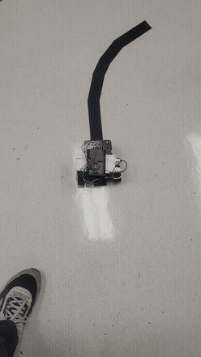
Results
The robot tracks and follows its path in real time, and users can dynamically change its objective on the fly.
Motorized Tracking Camera Sept 2024 – Dec 2024
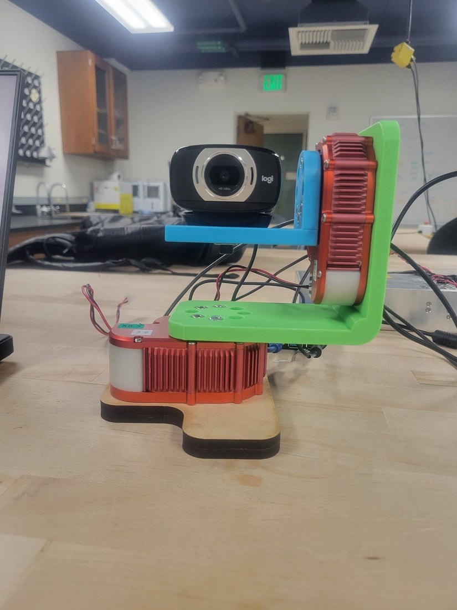
Objectives
Engineer a motorized tracking-camera system with a fully custom housing that follows a moving target in real time.
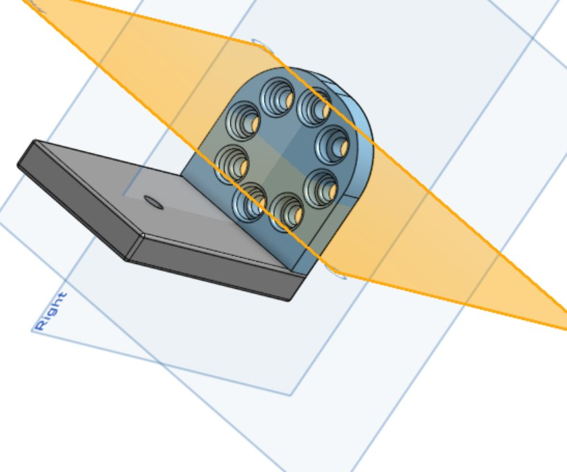
Methods
Fully CADed and assembled the custom housing and motor mounts, and optimized visual tracking with HSV constriction, erode-dilate filtering, and shape recognition.
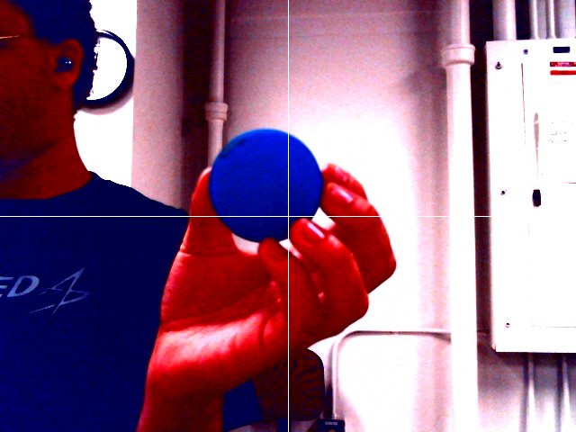
Results
Robust, low-noise real-time visual tracking that keeps a target centered as it moves.
Planetary Transmission Apr 2025 – Jun 2025
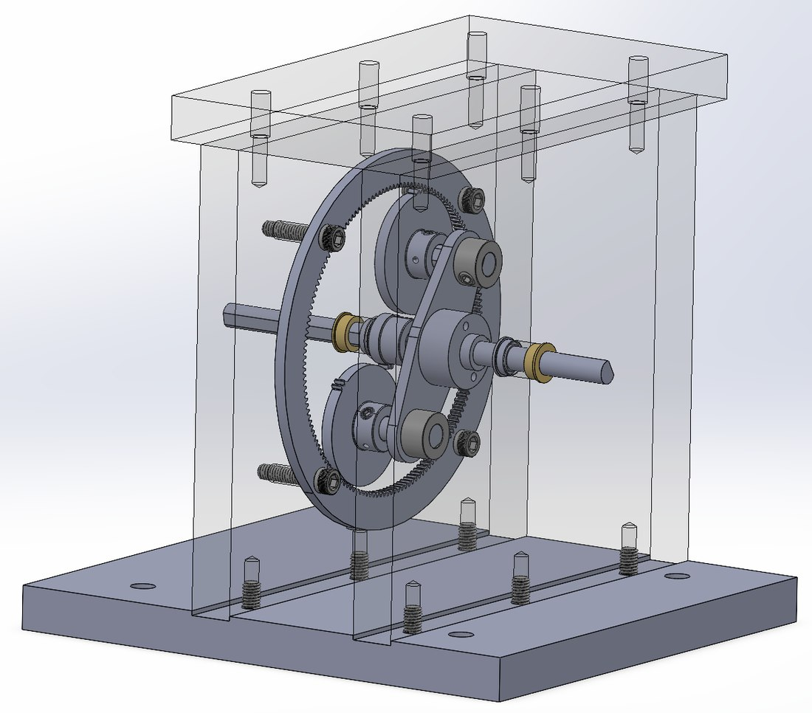
Objectives
Design, document, and machine a fully functional planetary transmission system from the ground up.
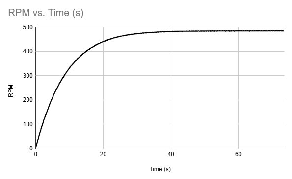
Methods
Delivered comprehensive PDR and CDR documentation including a full BOM, CAD models, and structural research analysis, with RPM- and power-versus-time testing to characterize performance.
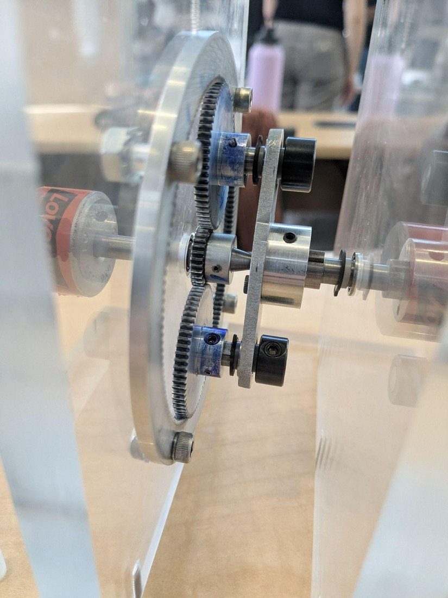
Results
Precision-machined and successfully assembled a fully functional planetary transmission system.